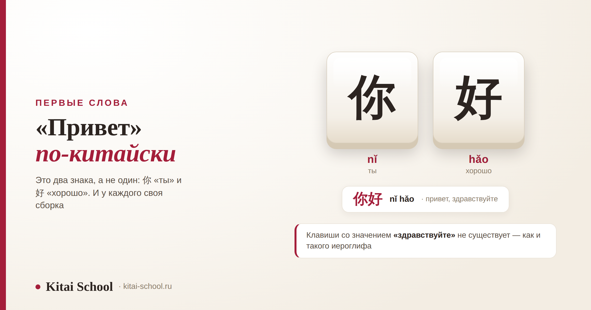
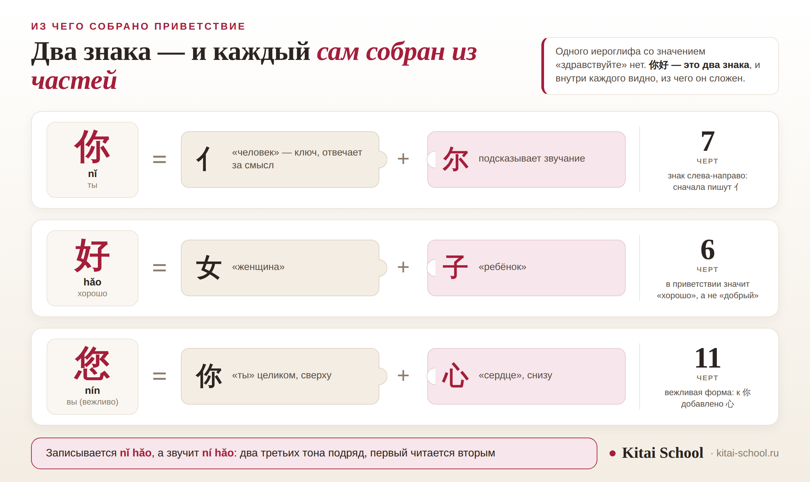

Первые слова
«Привет» по-китайски: как пишется 你好 и почему отдельного иероглифа «здравствуйте» нет


Ответ на вопрос помещается в одну строку: 你好, в пиньине nǐ hǎo. Дальше начинается то, что в эту строку не влезает. Приветствие здесь — два знака, а не один, у каждого внутри свои части, записывается оно чуть иначе, чем звучит, а отдельного иероглифа со значением «здравствуйте» в китайской письменности нет вообще. Ниже — как это пишется, как читается, как набирается на клавиатуре и где чаще всего ошибаются.
Сказать — nǐ hǎo, а в речи это звучит как ní hǎo. Написать — 你好, два знака подряд, без пробела. Вежливо — 您好 (nín hǎo). Набрать — ввести латиницей nihao и выбрать нужный вариант из подсказок. Одного иероглифа «здравствуйте» не существует: приветствие собрано из знаков «ты» и «хорошо».
Короткий ответ: как сказать и как написать
Всё, что нужно для первого раза, укладывается в четыре строки.
- Как будет — 你好, nǐ hǎo. Дословно «ты хорошо».
- Как пишется — два знака подряд: 你 и 好. Пробела между ними нет.
- Как вежливо — 您好, nín hǎo. Тот же второй знак, первый — вежливая форма «ты».
- Как произносится — ní hǎo. Записывается одним, читается немного другим, и это нормально.
Одну вещь оговорю сразу, чтобы не вводить в заблуждение. 你好 — это вежливое приветствие для человека, с которым вы не близки, и между своими его почти не говорят. Это отдельная тема, со своими правилами и своими формулами, и она разобрана целиком здесь: что отвечать на «нихао» и кому его вообще говорят. В этой статье — письменная и звуковая сторона: из чего собраны знаки, как они пишутся и как набираются.
Как пишется 你好: два знака и их части
Китайский знак почти никогда не бывает неделимым. Внутри у него части, и у каждой своя работа: одна отвечает за смысл, другая подсказывает звучание. В приветствии это видно хорошо.
你 nǐ «ты» — семь черт. Слева стоит 亻 — сокращённая форма знака «человек»; это ключ, по нему знак ищут в бумажном словаре. Справа — 尔, часть, которая подсказывает чтение. Как ключи управляют смыслом знаков целиком, разобрано отдельно: логика китайских ключей.
好 hǎo «хорошо» — шесть черт. Слева 女 «женщина», справа 子 «ребёнок». Объяснений, почему вместе получается «хорошо», ходит много, и все они красивые — но подтверждения у них нет, поэтому я их не пересказываю. Для письма достаточно запомнить две части.
您 nín «вы» — одиннадцать черт. Это целиком знак 你, под которым дописано 心 «сердце». Вежливость тут выражена буквально, и запоминается она легче, чем кажется: к «ты» добавлено «сердце».
Порядок письма общий для всей китайской письменности: сверху вниз и слева направо. В знаке с левой и правой частью сначала пишут левую — то есть в 你 сперва появляется 亻, и только потом 尔. Чем писать и в какой тетради — вопрос не праздный, он разобран здесь: чем писать китайские иероглифы. А почему знаки забываются через неделю после прописывания — здесь: как запоминать иероглифы.
Почему отдельного иероглифа «здравствуйте» нет
Запрос «китайский иероглиф здравствуйте» встречается часто, и за ним стоит понятное ожидание: раз в китайском каждое слово — знак, значит есть знак и для приветствия. Логика разумная, но язык устроен иначе.
Такого знака нет. Приветствие собрано из двух знаков, и ни один из них по отдельности приветствием не является:
- 好 само по себе — «хорошо», «хороший». Это очень частотный знак, он встречается в десятках слов, и приветствия в нём нет.
- 你 само по себе — «ты». Просто местоимение.
- Приветствием становится только сочетание: 你好. Вежливая форма 您好 — тоже два знака, а не один.

Из этого следует простая практическая вещь. Если вам нужно написать приветствие, нужно написать оба знака. Один знак, переписанный с картинки, приветствием не будет — он будет значить «ты» или «хорошо» в зависимости от того, какой вы выбрали. То же самое касается подарков и открыток: знак, который часто видят в красном квадрате, — это 福 «счастье», и к приветствию он отношения не имеет.
Так устроено не только приветствие. Большинство китайских слов сегодня состоит из двух знаков, и ожидание «одно слово — один знак» подводит постоянно. Почему в китайском нет букв и чем знак отличается от слова, разобрано здесь: какие буквы в китайском языке.
Как набрать 你好 на клавиатуре
Писать от руки учатся не все и не сразу, а вот набрать приветствие в переписке приходится почти всем. Устроено это не так, как кажется со стороны.
Китайский набирают латиницей. Вы переключаете раскладку, печатаете nihao — без значков тона, их при вводе не ставят, — и программа показывает список вариантов. 你好 в этом списке почти всегда первое. Почти.
Ученик написал мне в мессенджер первое своё сообщение по-китайски. Я открыла и увидела 拟好.
Секунд пять я честно пыталась понять, что он хочет сказать. «Подготовить»? Что подготовить? Потом дошло: он здоровается.
Выяснилось всё за минуту. Набрал он правильно — nihao, буква в букву. А дальше, не глядя, нажал на первый вариант в списке, хотя нужный стоял вторым. Знаки он на тот момент ещё не читал, и отличить одно от другого просто не мог.
С тех пор я показываю этот момент всем, кто начинает переписываться: набрать — это полдела, выбрать нужно глазами. Пока знаки не читаются, любая подсказка клавиатуры — лотерея. Это, кстати, лучший аргумент за то, чтобы учить знаки с самого начала, а не откладывать их на потом.
Второе, что стоит знать про набор: тоны при вводе не набирают. Значки над гласными нужны для учёбы и словарей, а клавиатуре хватает букв. Поэтому «nihao» и «nǐ hǎo» для неё одно и то же, и выбор всё равно остаётся за вами.
Третье: многие программы понимают сокращённый ввод — достаточно набрать первые буквы слогов, и nh уже выдаст 你好 в числе первых вариантов. Удобно, но ловушка та же: чем короче запрос, тем длиннее список похожих слов, и выбирать всё равно приходится глазами.
И способ, про который забывают: знак можно нарисовать пальцем — в телефоне есть рукописный ввод. Вот здесь и пригождается то, с чего начинался разговор: распознавание опирается на то, как знак нарисован, и привычный порядок черт заметно повышает шансы, что программа узнает именно 你.
Как это читается: nǐ hǎo, а звучит ní hǎo
Здесь одна особенность, которую стоит знать с самого начала, иначе собственное произношение будет расходиться с тем, что слышно вокруг.
Записывают приветствие как nǐ hǎo — оба слога третьим тоном. А произносят как ní hǎo: когда два третьих тона идут подряд, первый из них читается вторым. Это общее правило китайского, а не причуда приветствия: оно действует везде, где такие слоги оказываются рядом, и запоминать его отдельно для приветствия не нужно.
И про запись русскими буквами, раз уж «ни хао» встречается на каждом шагу. Такая запись удобна ровно один раз — когда нужно произнести фразу через пять минут и больше к ней не возвращаться. Для учёбы она не годится: русские буквы передают другие звуки, и переучивать потом тяжелее, чем выучить сразу. Как ставят звуки и тоны, разобрано здесь: корректировка произношения.
Что ещё говорят вместо 你好
Приветствий в китайском больше одного, и у каждого своё место. Здесь — короткая опись: как пишется, как читается, что значит дословно и когда звучит естественно.
| Форма | Чтение | Дословно | Когда |
|---|---|---|---|
| 您好 | nín hǎo | вы хорошо | вежливое обращение: к старшему, незнакомому, клиенту |
| 大家好 | dàjiā hǎo | все хорошо | сразу всей группе — в классе, на встрече, в видео |
| 早上好 | zǎoshang hǎo | утро хорошо | утреннее приветствие; вечером — 晚上好 |
| 好久不见 | hǎojiǔ bú jiàn | давно не виделись | знакомому после долгой паузы |
| 喂 | wéi | алло | только в телефонном разговоре, при встрече так не здороваются |
Это именно опись, а не разбор. Кому из них что говорят, что отвечают в ответ, почему между знакомыми приветствие часто заменяется обращением по имени и что означает вопрос «поел?» — всё это разобрано в отдельной статье: что отвечать на «нихао» и как здороваются со своими. Там же готовые пары реплик. А как заканчивают разговор, разобрано здесь: как попрощаться на китайском.
Пять ошибок при письме
Все пять я вижу регулярно, и все пять лечатся за один раз.
| Что делают | В чём дело |
|---|---|
| Пишут 好你 | знаки переставлены местами, и слова уже нет: порядок знаков в китайском меняет смысл |
| Ставят пробел между знаками | китайский текст пишется без пробелов внутри слова; 你好 — это 你好, а не 你 好 |
| Отправляют носителю «ni hao» латиницей | пиньинь — учебная запись звучания, в переписке на нём не пишут |
| Записывают «ни хао» русскими буквами | русские буквы дают другие звуки, и произношение закрепляется неправильно |
| Пишут 妳 вместо 你 женщине | вариант 妳 встречается в традиционном письме, прежде всего на Тайване; на материке пишут 你 независимо от пола |
Про последнюю строку оговорюсь честно: 妳 — не ошибка как таковая, а региональная особенность. Но если вы учите современный материковый китайский, писать женщине 妳 не нужно: вас поймут, однако выглядеть это будет странно, как написанное не из той традиции. О том, как вообще устроено обращение и почему китайцы так внимательны к форме, — здесь: как общаются китайцы.
Приветствие — первое, что произносят вслух, и первое, что закрепляется неправильно: по русской записи, с ровным тоном, без разницы между 你好 и 您好. Разобрать это проще сразу, чем переучивать: онлайн-курсы китайского. Если интересует именно письменность — есть отдельный курс иероглифики. Оставить заявку или написать в Telegram. С чего начинать, если вы только подступаетесь, разобрано здесь: изучение китайского с нуля.
Частые вопросы (FAQ)
Как будет «привет» на китайском языке?
你好 — в пиньине nǐ hǎo. Это сочетание из двух знаков: 你 означает «ты», 好 означает «хорошо», а вместе получается приветствие. Вежливый вариант — 您好 (nín hǎo), его говорят старшему по возрасту или положению и незнакомому человеку в официальной обстановке. В речи сочетание звучит немного не так, как записано: ní hǎo.
Как пишется «привет» по-китайски?
Двумя знаками подряд, без пробела между ними: 你好. В первом знаке семь черт, он состоит из части 亻 слева и части 尔 справа. Во втором знаке шесть черт: 女 слева и 子 справа. Пишут знаки в общем порядке — сверху вниз и слева направо, то есть в 你 сначала появляется левая часть, потом правая.
Есть ли в китайском отдельный иероглиф «здравствуйте»?
Нет, и это главное недоразумение вокруг темы. Приветствие в китайском собрано из двух знаков, и ни один из них сам по себе приветствием не является: 好 отдельно значит «хорошо», 你 отдельно — «ты». Вежливая форма 您好 тоже состоит из двух знаков. Поэтому искать один знак со значением «здравствуйте» бесполезно — его в письменности нет.
Как набрать 你好 на клавиатуре?
Переключиться на китайскую раскладку и ввести латиницей nihao, без знаков тона. Программа предложит список вариантов, и 你好 почти всегда стоит в нём первым, но не всегда: рядом оказываются другие слова с тем же чтением, например 拟好 «подготовить, набросать». Поэтому выбирать нужно по знакам, а не по месту в списке.
Чем знак 您 отличается от 你 на письме?
您 — это тот же знак 你, под которым дописано 心 «сердце». Получается одиннадцать черт вместо семи, и ключом у него считается уже 心. На слух разница тоже есть: 你 читается nǐ, 您 — nín. Вежливость в этой паре выражена буквально: к «ты» добавлено «сердце».
Можно ли записывать китайское приветствие русскими буквами?
Для первого знакомства — пожалуйста, но учить по такой записи не стоит. Русские буквы передают не те звуки, и то, что закрепится в памяти, придётся потом переучивать. Для записи звучания в китайском есть пиньинь — латиница со значками тона, и опираться лучше сразу на него.
Пусть первое слово дастся легко! 万事开头难！
Источники
- Число черт, ключ и состав знаков приведены по словарным данным: 你 — семь черт, ключ 亻, части 亻 и 尔; 好 — шесть черт, части 女 и 子; 您 — одиннадцать черт, ключ 心, части 你 и 心. По данным Unicode у 您 ключ 61 и семь дополнительных черт, что в сумме даёт те же одиннадцать.
- Порядок письма — общее правило китайской письменности: сверху вниз, слева направо; в знаке с левой и правой частью сначала пишется левая.
- Изменение тона: два третьих тона подряд, первый читается вторым. Правило общее, не относящееся только к приветствию.
- Про 妳: вариант знака «ты» для обращения к женщине, встречающийся в текстах на традиционном письме, прежде всего на Тайване. Это описание сложившейся практики по словарным и пользовательским источникам, а не норма из справочника; на материке пишут 你 независимо от пола.
- Истории появления самой формулы 你好 в статье нет намеренно: встречается утверждение, что как нейтральное универсальное приветствие она закрепилась в прошлом веке, но ссылки ведут на обучающие материалы, а не на исследования. Дат без надёжного источника я не привожу.
- Народные объяснения состава знака 好 не пересказываются: подтверждения им нет, а запоминанию они помогают не больше, чем простое «женщина плюс ребёнок».
- Практика Kitai School: первые реплики у начинающих, типичные ошибки при письме и при выборе из подсказок клавиатуры.